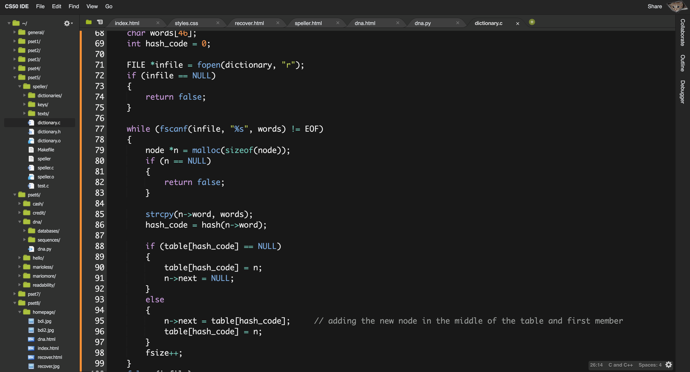

Speller
This problem broke the trend of simply giving a console output which is to be the final step of the whole process.
And not just that, it also asked us to do something interesting – recovering deleted photos, something that would surely come in handy.

Along with the problems I would also like to give a discription
of the ups and downs along with the specialities of the problem.
The lecture pertaining to this problem introduced the ‘file’ functions, hexadeximal notations and a bit more of memory manipulation.
That’s quite a bit to cover in a single lecture considering that the file functions were somewhat tricky to understand.
That’s what created hurdles while working with the pset. But eventually these hurdles were crossed like any other ;)